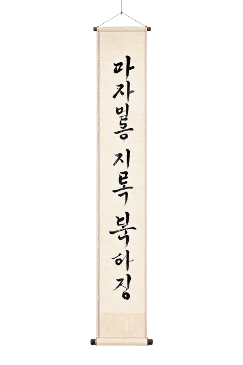
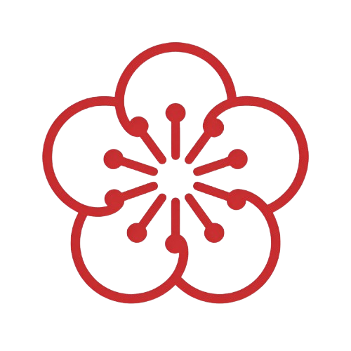
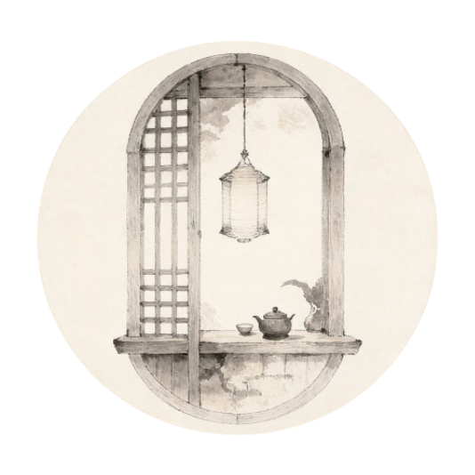
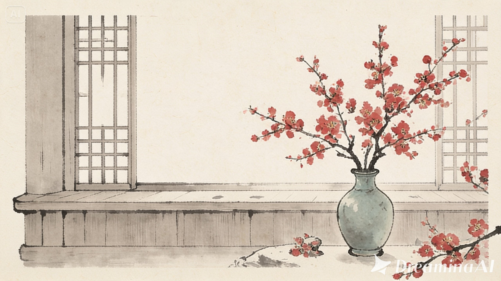

Com sólida experiência no ecossistema Angular e TypeScript. Desenvolvo interfaces escaláveis, responsivas e de alta performance, unindo arquitetura sólida (Clean Architecture) a uma integração eficiente de APIs REST.


Sou um Engenheiro de Software com foco em usabilidade, performance e qualidade de código. Com uma sólida base de backend (.NET e Java), possuo total autonomia para atuar de ponta a ponta na integração de sistemas complexos.
Trabalho em forte alinhamento com times de Produto e Design (UI/UX) para garantir que as regras de negócio sejam traduzidas em interfaces fluidas. Além disso, utilizo Inteligência Artificial no meu dia a dia como ferramenta de produtividade para otimizar testes unitários (Jasmine), apoiar refatorações e garantir um code review rigoroso e ágil.
Ampla facilidade com leitura técnica, documentação oficial e consumo de conteúdos de desenvolvimento. Conversação e escrita em aprimoramento ativo.
Plataforma corporativa desenvolvida para a gestão de clientes e processos, estruturada sob os princípios de Domain-Driven Design (DDD).
Sistema de gestão acadêmica que vincula tarefas, provas e calendários às disciplinas do estudante universitário.

Implementação prática com foco em dominar fluxos reativos e gerenciamento avançado de estados no Angular utilizando RxJS.
Estou disponível para novas oportunidades em posições de nível Pleno. Sinta-se à vontade para enviar um e-mail ou conectar no LinkedIn.